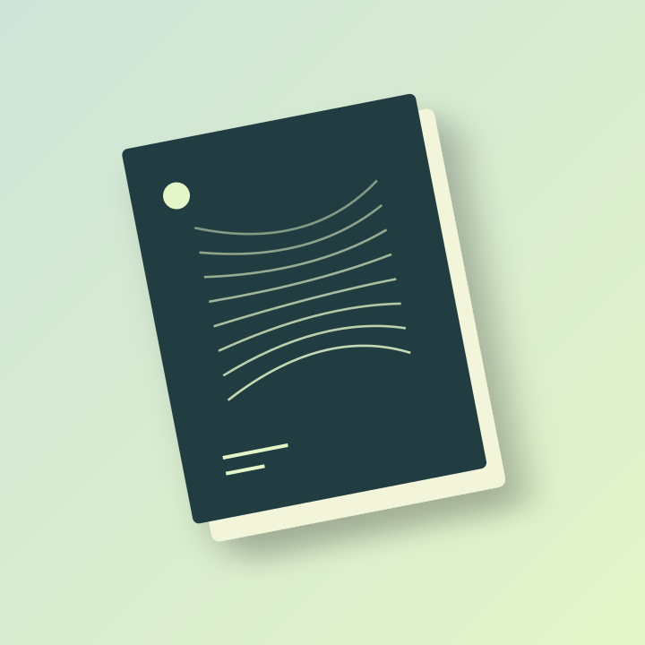
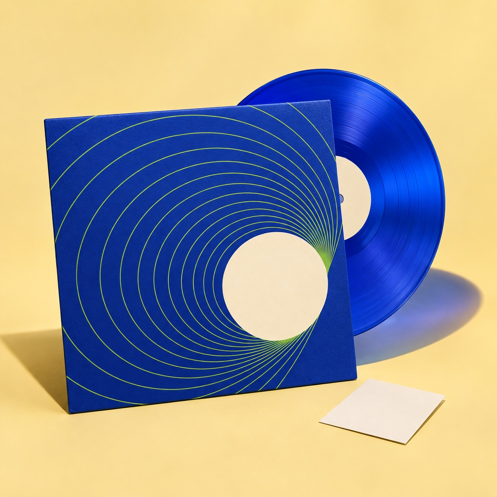
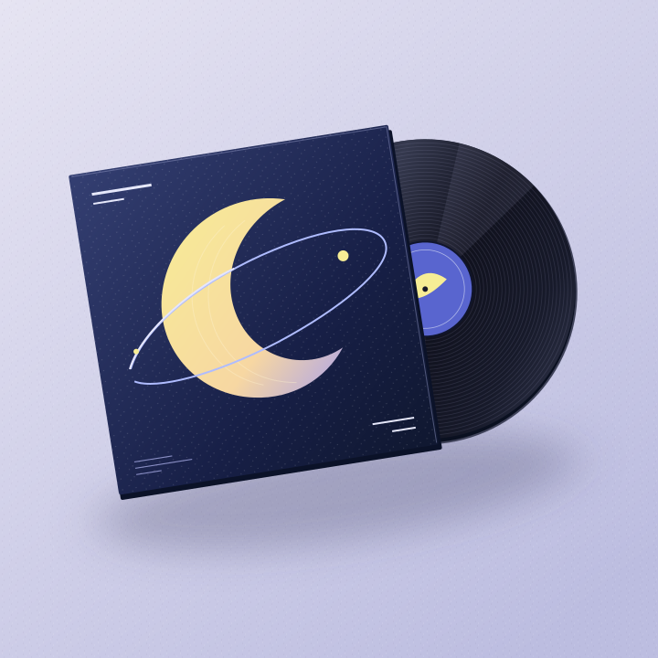
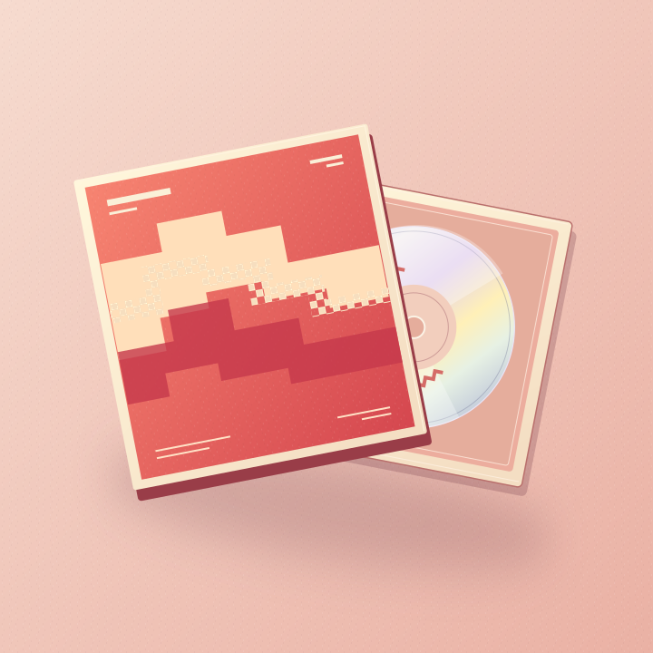

모노 파도 · 아트 포토북

루프 에디션 / 아카이브 북
작은 소리의 목록
19,500원
마음에 남은 곡의 제목과 한 줄 메모를 모으는 작은 기록집입니다. 어디서 무엇을 들었는지 적을 수 있도록 여백을 남겼습니다.
구성품
140 × 175 mm · 56쪽 · 무선 제본
배송·결제 안내
가상의 상품입니다. 실제 재고, 주문 접수, 배송 및 결제는 제공하지 않습니다.
ALSO ON THE SHELF
함께 둘러보기

NEW폴디드 노트 · 컬러 바이닐
블루 룸
36,000원
NEW모노 파도 · 바이닐 EP
달의 보폭
32,000원
NEW신호정원 · 미니 앨범 CD